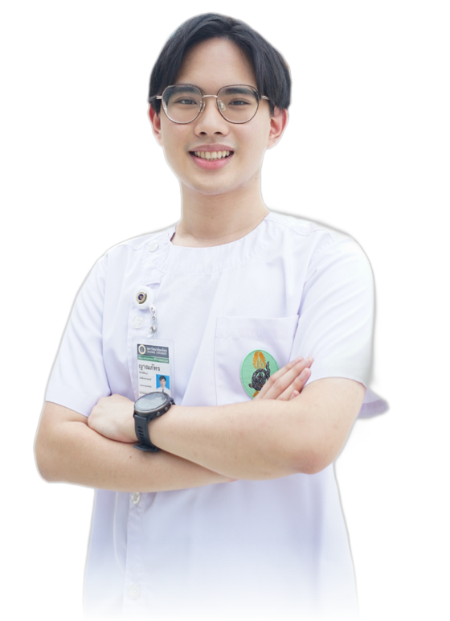
Yanaphat Pinijpichitkul
ญาณภัทร พินิจพิชิตกุล
- Orthopaedics
- 6th-year medical student, Siriraj
- MD 2027
At a glance
NUH Ortho exchange
Tel Aviv, 2019
Medicine
- Ortho
- Orthopaedic & plastic surgery exchange, NUH Singapore, 2025. Observer at the 46th RCOST Annual Meeting, 2024. Informal 2-week Ortho observership at Kanchanaphisek, October 2026. Duke University exchange, April 2027 (pending)
- Research
- MSc thesis on a wearable rehab sensor for sports rehabilitation. First author, ALBI score study (oral presentation, 2025)
- Education
- MD Siriraj 2027, with MSc Biomedical Engineering (MAP-C) and Health Business Management (CMMU)
- Award
- Siriraj Internal Medicine clinical excellence and ethics award, 2025
Highlights
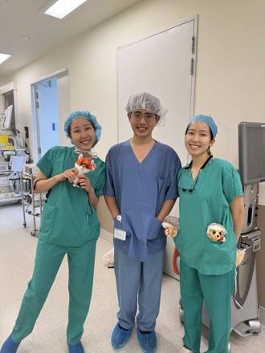
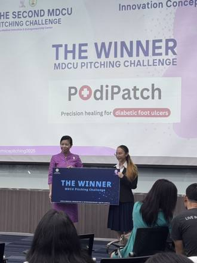
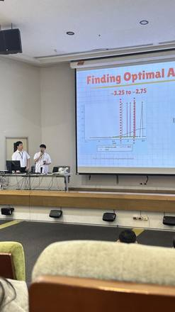
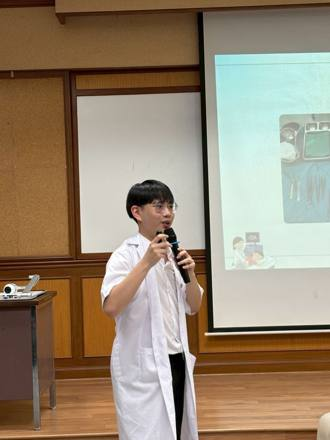
Ortho timeline
Represented Thailand at IPhO, APhO and IAO. Where mechanics started
Entered Siriraj through the Olympiad quota
Observer at the 46th RCOST Annual Meeting. PodiPatch, Grand Finalist at NUS
Orthopaedic & plastic surgery exchange, NUH Singapore. PodiPatch wins MDCU
MSc thesis on a wearable rehab sensor. Informal Ortho observership, Kanchanaphisek
Clinical exchange at Duke University (pending). MD graduation
Why Orthopaedics
ผมอยากเป็นแพทย์ออร์โธปิดิกส์ที่เข้าใจทั้ง "แรงที่กระทำต่อกระดูก" และคนไข้ที่อยากกลับมาเดินได้อีกครั้ง
ผมเริ่มสนใจเรื่องแรงและการเคลื่อนไหวตั้งแต่สมัยเป็นตัวแทนประเทศไทยแข่งขัน Physics Olympiad ระหว่างปี 2017 ถึง 2019 ซึ่งพาผมไปถึงเหรียญทองแดง IPhO ครั้งที่ 50 ที่ Tel Aviv แต่ช่วงแรกที่เข้าเรียนที่ศิริราช ผมยังไม่เห็นว่า Physics จะเชื่อมกับงานคลินิกได้อย่างไร จนกระทั่งได้วน Rotation ออร์โธปิดิกส์และเห็นว่า Force, Moment และ Material Mechanics คือพื้นฐานเดียวกับ Fracture Fixation, Implant Design และ Gait Analysis ที่อาจารย์ใช้ตัดสินใจในห้องผ่าตัดจริง
Read more
หลังจากนั้นผมตั้งใจหาประสบการณ์ด้าน Ortho เพิ่มเติมอย่างเป็นลำดับ ตั้งแต่การได้รับความกรุณาจาก อ.กีรติ ให้ติดตามไปงานประชุม RCOST ครั้งที่ 46 ในเดือนตุลาคม 2024 ในฐานะตัวแทน SIORS ไปจนถึงการได้รับคัดเลือกเป็น 1 ใน 4 จาก 15 คนไป Clinical Exchange ด้าน Orthopaedic & Plastic Surgery ที่ NUH สิงคโปร์ในปี 2025 ซึ่งทำให้ผมได้เห็นงาน Ortho ในบริบท "สังคมผู้สูงอายุ" อย่างเต็มรูปแบบ ควบคู่ไปกับการทำ MSc Thesis ด้าน Biomedical Engineering เรื่อง Wearable Rehab Sensor ที่วัดการเคลื่อนไหวของข้อต่อออกมาเป็นข้อมูลเชิงปริมาณ
ผมไม่ได้มองว่า Physics, Biomedical Engineering และงานคลินิกเป็นคนละเส้นทาง แต่คือส่วนประกอบของแพทย์ออร์โธปิดิกส์คนหนึ่งที่ผมตั้งใจจะเป็น แม้ประสบการณ์ของผมจะยังเป็นเพียงจุดเริ่มต้นเล็กๆ ผมตั้งใจจะเรียนรู้งานคลินิกจากอาจารย์และรุ่นพี่อย่างเต็มที่ เพื่อนำพื้นฐานด้านวิศวกรรมที่มีมาใช้ดูแลให้คนไข้กลับมาเคลื่อนไหวได้อีกครั้ง
Work
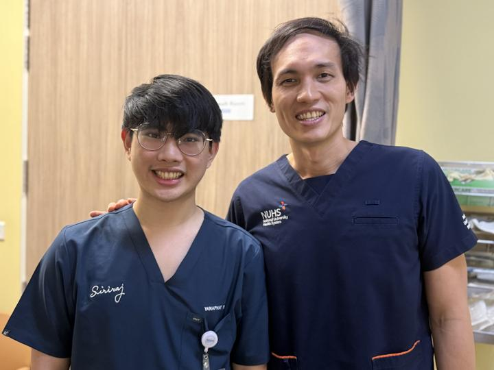
01Orthopaedic Exposure
Ortho exchange at NUH Singapore, the RCOST annual meeting, and a Duke exchange ahead
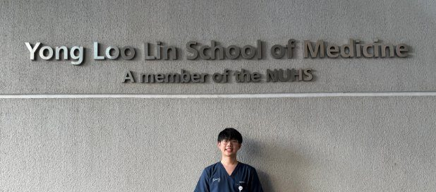
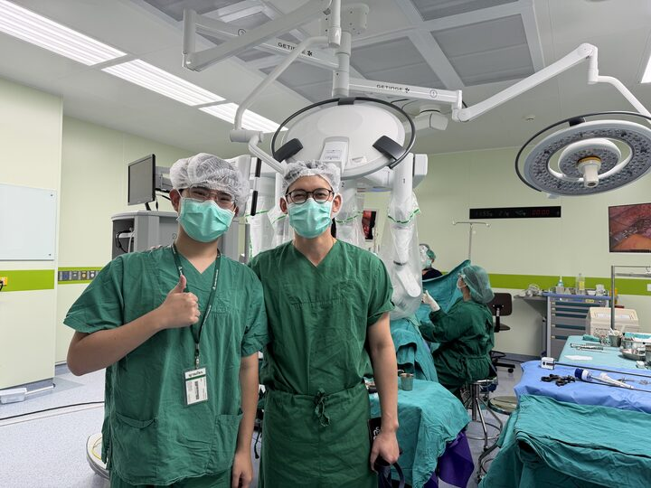
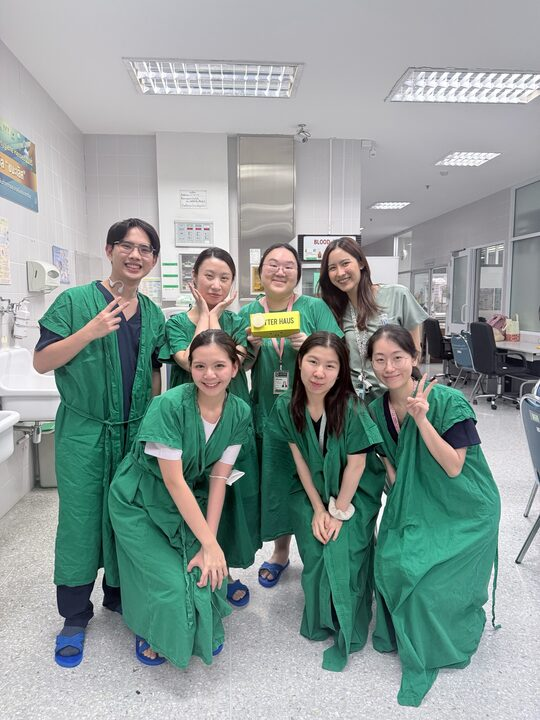
- 2024
- Observer at the 46th RCOST Annual Meeting
- 2025
- Orthopaedic & plastic surgery exchange, NUH Singapore
- 2026
- Informal 2-week Ortho observership, Kanchanaphisek
- 2027
- Clinical exchange, Duke University (pending)
- 3
Orthopaedic & plastic surgery exchange, NUH Singapore
24 February – 21 March 2025. OR, ward rounds and OPD
View 3 photos and details 46th RCOST Annual Meeting
Observer as SIORS representative with Ajarn Kirati, 17–19 October 2024
View detailsOrtho observership, Kanchanaphisek Medical Center
2 weeks in October 2026, alongside my main elective
View detailsClinical exchange, Duke University
Selected to represent Siriraj, 5–30 April 2027
View details- 6
Clinical years at Siriraj Hospital
Orthopaedic rotation, operating theatres and wards
View 6 photos and details EFORT webinars
AI, robotics, exoskeletons and shoulder instability
View details
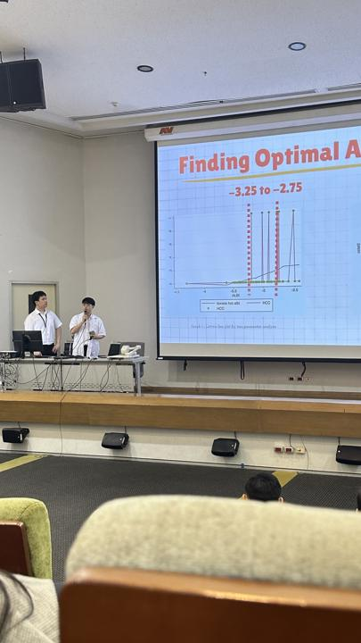
02Research & Engineering
A rehab sensor thesis in biomedical engineering, plus 5 research projects
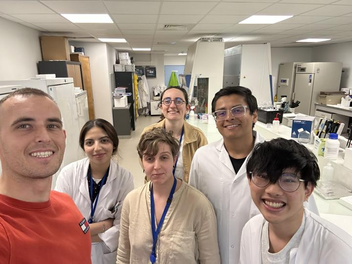
- 2023
- Research assistant, Aix-Marseille Université
- 2025
- Oral presentation, Siriraj Research Day
- 2026
- Rehab sensor thesis in progress. 2 papers in review
Wearable rehab sensor for sports rehabilitation
MSc thesis, Biomedical Engineering (MAP-C)
View detailsBusiness model for holistic rehabilitation
MSc thesis, CMMU. Physiotherapy B2B service
View detailsALBI score as a predictor of HCC in non-cirrhotic hepatitis B carriers
GI & Liver Center, Siriraj
View 1 photo and detailsOutcomes by gestational age at PPROM before 28 weeks
Division of Maternal-Fetal Medicine, Siriraj
View detailsLong-term continuation and predictors of LNG-IUS expulsion
Gynecologic Endocrinology Unit, Siriraj, n = 261
View detailsCoxiella burnetii infection and placental immunity
Aix-Marseille Université, France. Cell culture, PCR and EM preparation
View 2 photos and details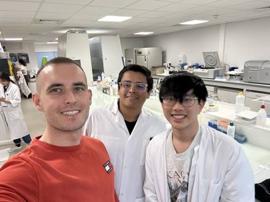
2
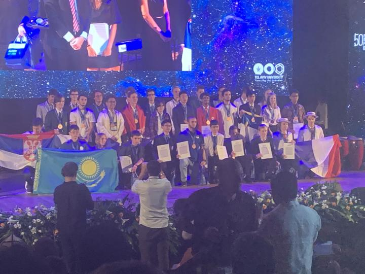
03Physics Foundation
Represented Thailand 2017–2019. Force, moment and material mechanics are the same basics as fracture fixation, implant design and gait analysis
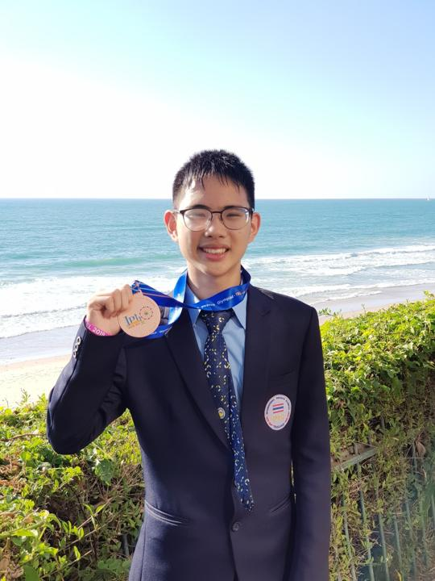
- 2017
- Bronze, IAO XXII. Gold, Thailand Astronomy Olympiad
- 2018
- Gold, Thailand Physics Olympiad
- 2019
- Bronze, IPhO 50. Honorable Mention, APhO 20
- 2
Bronze, 50th International Physics Olympiad
Tel Aviv, Israel, 2019
View 2 photos and details Honorable Mention, 20th Asian Physics Olympiad
Adelaide, Australia, 2019
View detailsBronze, 22nd International Astronomy Olympiad
Weihai, China, 2017
View detailsGold, 17th Thailand Physics Olympiad
POSN, 2018
View detailsGold (2nd place), 14th Thailand Astronomy Olympiad
2017
View details
Medical Devices
From a diabetic foot patch to a US FDA filing, the groundwork for implant and rehab technology
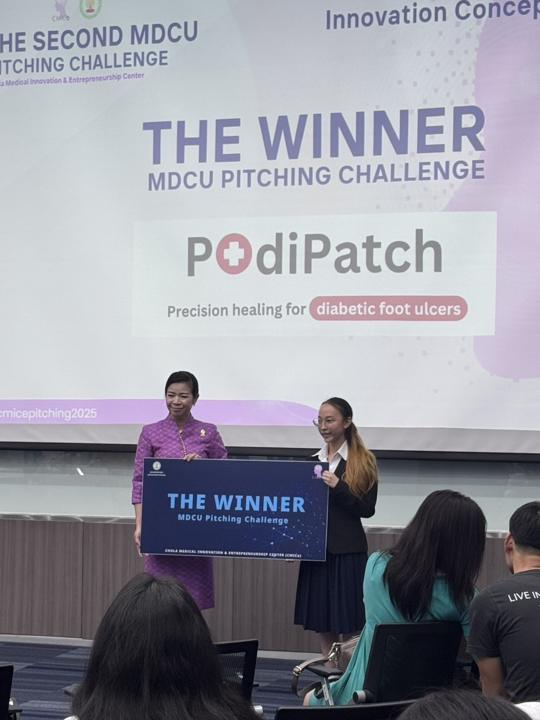
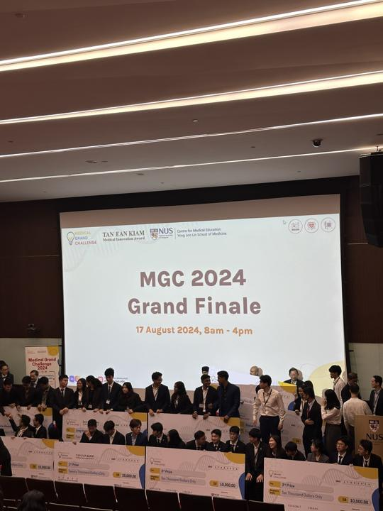
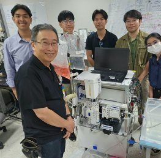
- 2021
- Won UniHack with UNITE. Selected as a 42 Bangkok cadet
- 2024
- PodiPatch, Grand Finalist at NUS. Joined Nirvamed
- 2025
- PodiPatch wins the MDCU Pitching Challenge
- 3
PodiPatch
Microneedle sensor and drug-delivery patch for diabetic foot ulcers, to prevent amputation
View 3 photos and details Nirvamed
Medical device from design experiment to US patent and US FDA filing
View 3 photos and details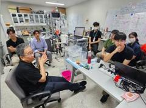
3UNITE
AI study platform for medical students. Won UniHack 2021
View 2 photos and details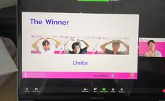
2Trawell
Health-travel platform. Top 5 at Mahidol, Startup Thailand League. NIA grant, 25,000 THB
View 3 photos and details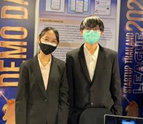
3
Leadership
Founding a club from scratch, chairing Student Union events and running PMAC for 2 years
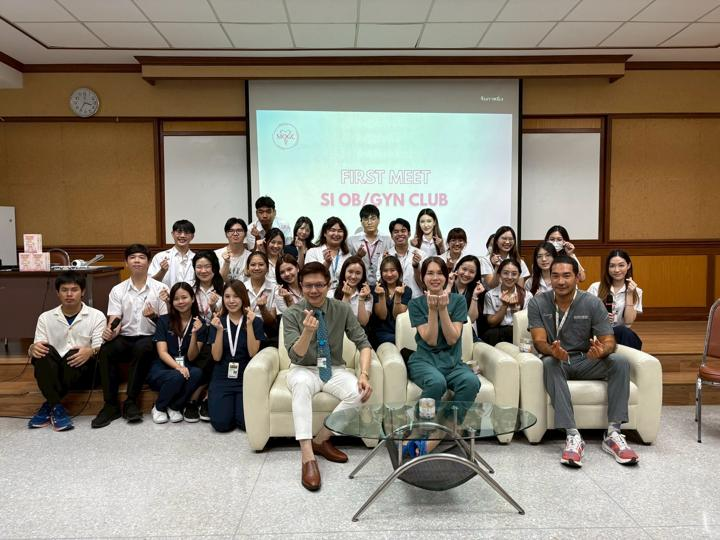
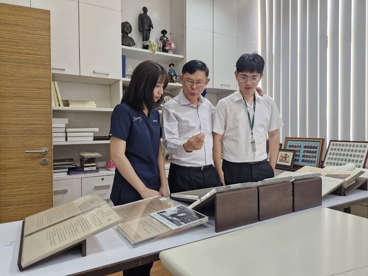
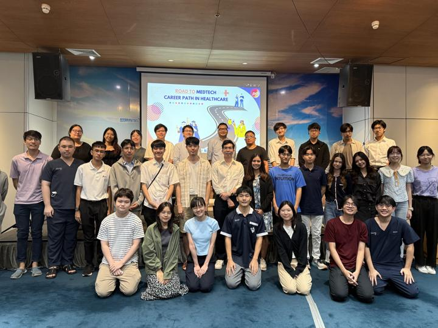
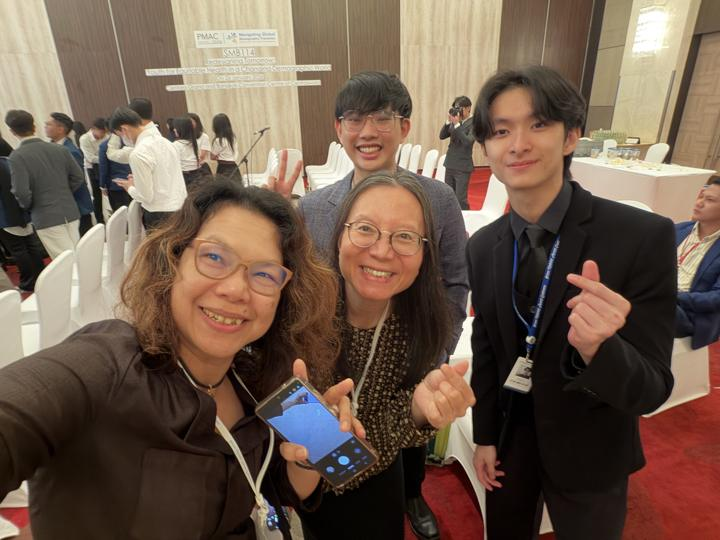
- 2022
- Head of Facilitator, Siriraj Hackathon
- 2024
- Founded SIOGC. Chaired Road to MedTech
- 2025–26
- Vice president, PMAC Global Health Case Competition
President & Founder, SIOGC
Built the club from zero: 8 divisions, 10 events, 500+ attendees, succession plan
View 5 photos and details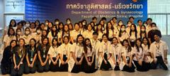
5Siriraj Student Union, technology
Head facilitator of the Siriraj Hackathon, then chair of Road to MedTech
View 3 photos and details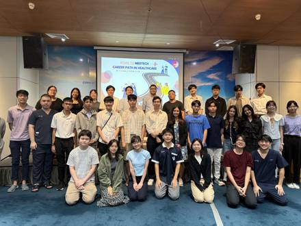
3PMAC Global Health Case Competition
Vice president for 2 years. Teams from 6 countries
View 5 photos and details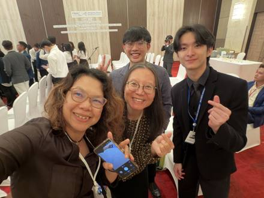
5Global Health Case Competition Unit
Set up after competing at IPGHCC, University of Melbourne
View 1 photo and details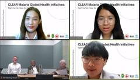
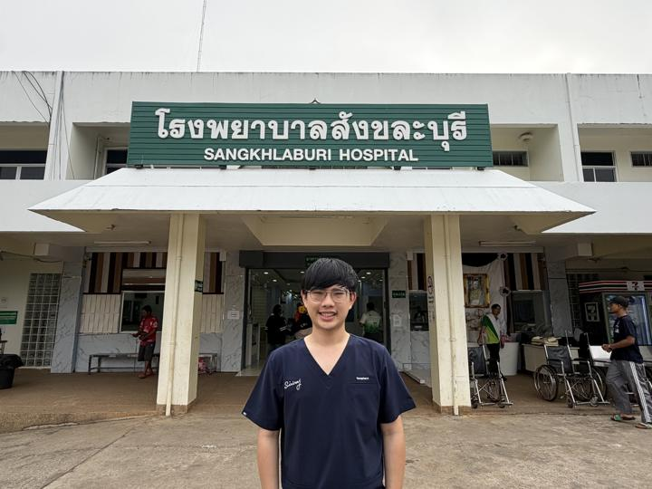
06Community
Fieldwork in Sangkhlaburi and Khlong Toei
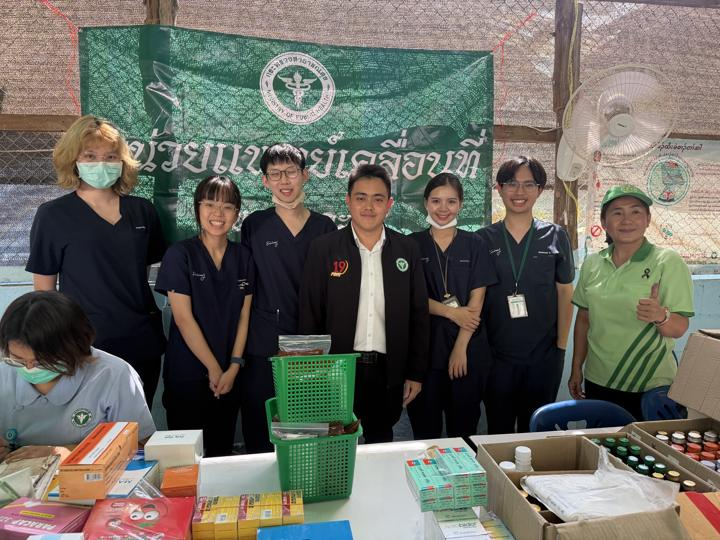
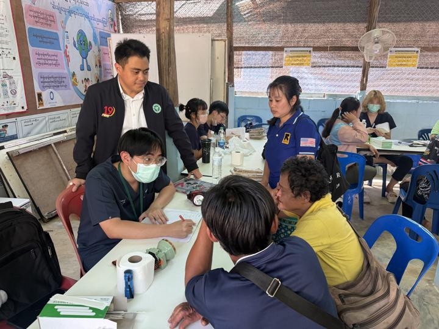
- 2025
- Co-founded Issara Project in Khlong Toei
- 2026
- Mobile medical unit at Ban Don Yang refugee camp
- 5
Mobile medical unit, Ban Don Yang refugee camp
Sangkhlaburi, Kanchanaburi
View 5 photos and details Insulin-injection video in 3 languages
Thai, Mon and Burmese, for Sangkhlaburi Hospital
View 3 photos and details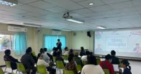
3Issara Project
Hypertension screening in Khlong Toei with Siriraj Hope Club and NUS
View 3 photos and details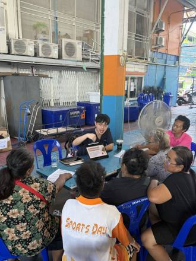
3
Awards
รางวัล "สิ่งชูวงศ์ องอาจยุทธ และธีรพร เลิศรัฐ"
Best 5th-year student in Internal Medicine for clinical performance and ethics, Siriraj
View announcement and details- 2
Winner, MDCU Pitching Challenge
PodiPatch, 30,000 THB prize
View 2 photos Selected oral presentation
Siriraj Research Day, ALBI score study
View 1 photo- 2
Grand Finalist, NUS Medical Grand Challenge
PodiPatch, Singapore
View 2 photos - 2
Winner, UniHack
UNITE, hosted by Chula Tech Startup
View 2 photos